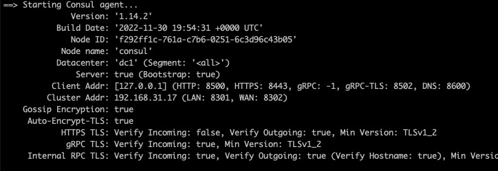
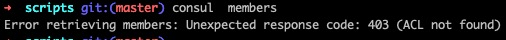

consul实战系列-之三 Consul服务器搭建，实现加密通信和认证访问
consul实战系列-之三 Consul服务器搭建，实现加密通信和认证访问
在上一篇文章中，我们用Consul作为服务注册和发现工具，使用Spring Cloud Consul开发一个简单的服务注册和和发现应用例子 但是consul本身是以开发模式运行，consul agent server之间，以及consul agent client与server之间通信没有做认证和加密，本篇文章我们就讲讲怎样搭建consul， 实现认证访问和加密通信，本篇文章结束，我们搭建了一个单机的consul实例，后续我们讲讲怎样搭建consul 集群，通过多副本实现高可用
准备工作
确保在机器上已经安装一下程序
- consul # consul的二进制程序
- jq #json命令行工具
- git # 不解释
- dig #DNS剖析工具
生成Consul Server配置
之前我使用consul都是以开发模式启动，现在我们需要按照生产的标准搭建consul server，因此需要做一系列的配置，包括
- CA证书
- 又CA证书签发的服务器证书
- 访问控制配置
- consul端口等配置
第一步，导入环境变量
export DATACENTER="dc1" \
export DOMAIN="consul" \
export CONSUL_DATA_DIR="/etc/consul/data" \
export CONSUL_CONFIG_DIR="/etc/consul/config" \
执行脚本，生成配置
本教程对应脚本
根据官方教程脚本修改 consul官方教程脚本 以适应新版本consul配置
./generate_consul_server_config.sh
生成文件列表
/etc/consul/config
├── agent-gossip-encryption.hcl 【gossip协议 加密通信密钥】
├── agent-server-acl.hcl 【访问控制】
├── agent-server-secure.hcl 【server agent安全配置，启用访问控制，默认拒绝】
├── agent-server-specific.hcl 【特定服务器参数】
├── agent-server-tls.hcl 【TLS加密配置和证书路径】
├── consul-agent-ca-key.pem 【agent CA证书密钥】
├── consul-agent-ca.pem 【agent CA证书】
├── dc1-server-consul-0-key.pem 【server证书密钥】
└── dc1-server-consul-0.pem 【server证书】
校验配置 consul validate ${CONSUL_CONFIG_DIR}
启动服务器
consul agent -node=consul -config-dir=${CONSUL_CONFIG_DIR}
启动控制台输出 
通过命令行与consul交互
没有token之前访问报错 
consul可以设置节点是否为引导节点和可以导出bookstreap token次数,我们的脚本里生成配置文件agent-server-specific.hcl bootstrap_expect = 1
通过引导token生成访问consul server,再生成后续访问的token
设置一些环境变量
export CONSUL_ADDRESS="127.0.0.1"
export CONSUL_HTTP_ADDR="https://CONSUL_ADDRESS:8443" \
export CONSUL_HTTP_SSL=true \
export CONSUL_CACERT="${CONSUL_CONFIG_DIR}/consul-agent-ca.pem" \
export CONSUL_TLS_SERVER_NAME="server.${DATACENTER}.${DOMAIN}" \
export CONSUL_FQDN_ADDR="consul"
将引导token导出到acl-token-bootstrap.json
consul acl bootstrap --format json > ./acl-token-bootstrap.json
导入到环境变量CONSUL_HTTP_TOKEN
export CONSUL_HTTP_TOKEN=`cat ./acl-token-bootstrap.json | jq -r ".SecretID"`
这时候执行命令 consul members 输出
Node Address Status Type Build Protocol DC Partition Segment
consul 192.168.31.17:8301 alive server 1.14.2 2 dc1 default <all>
表示已经能正常访问
创建server token
引导token相当于是个超级管理员,显然不适合其它场景访问，我们通过引导token生成server token和DNS token
准备两个文件
- acl-policy-dns.hcl # DNS访问策略
- acl-policy-server-node # server节点访问策略
acl-policy-dns.hcl内容
node_prefix "" {
policy = "read"
}
service_prefix "" {
policy = "read"
}
# Required if you use prepared queries
query_prefix "" {
policy = "read"
}
acl-policy-server-node.hcl内容
## consul-server-one-policy.hcl
node_prefix "consul" {
policy = "write"
}
- 根据DNS策略定义文件创建DNS策略
consul acl policy create -name 'acl-policy-dns' -description 'Policy for DNS endpoints' -rules @./acl-policy-dns.hcl
- 根据server节点访问策略定义文件创建策略
consul acl policy create -name 'acl-policy-server-node' -description 'Policy for Server nodes' -rules @./acl-policy-server-node.hcl
-
DNS Token导出到acl-token-dns.json
consul acl token create -description 'DNS - Default token' -policy-name acl-policy-dns --format json > ./acl-token-dns.json -
Server Token导出到server-acl-token.json
consul acl token create -description "server agent token" -policy-name acl-policy-server-node --format json > ./server-acl-token.json -
导入环境变量
export DNS_TOKEN=`cat ./acl-token-dns.json | jq -r ".SecretID"`
export SERVER_TOKEN=`cat ./server-acl-token.json | jq -r ".SecretID"`
- 设置agent Token
consul acl set-agent-token default ${DNS_TOKEN}
consul acl set-agent-token agent ${SERVER_TOKEN}
验证
执行consul members consul info等命令验证结果
与DNS服务器交互
dig @127.0.0.1 -p 8600 consul.service.consul
输出
; <<>> DiG 9.10.6 <<>> @127.0.0.1 -p 8600 consul.service.consul
; (1 server found)
;; global options: +cmd
;; Got answer:
;; ->>HEADER<<- opcode: QUERY, status: NOERROR, id: 61730
;; flags: qr aa rd ra; QUERY: 1, ANSWER: 1, AUTHORITY: 0, ADDITIONAL: 1
;; OPT PSEUDOSECTION:
; EDNS: version: 0, flags:; udp: 4096
;; QUESTION SECTION:
;consul.service.consul. IN A
;; ANSWER SECTION:
consul.service.consul. 0 IN A 192.168.31.17
;; Query time: 0 msec
;; SERVER: 127.0.0.1#8600(127.0.0.1)
;; WHEN: Wed Dec 21 16:59:00 CST 2022
;; MSG SIZE rcvd: 66
可以看到consul.service.consul 被解析到IP 192.168.31.17